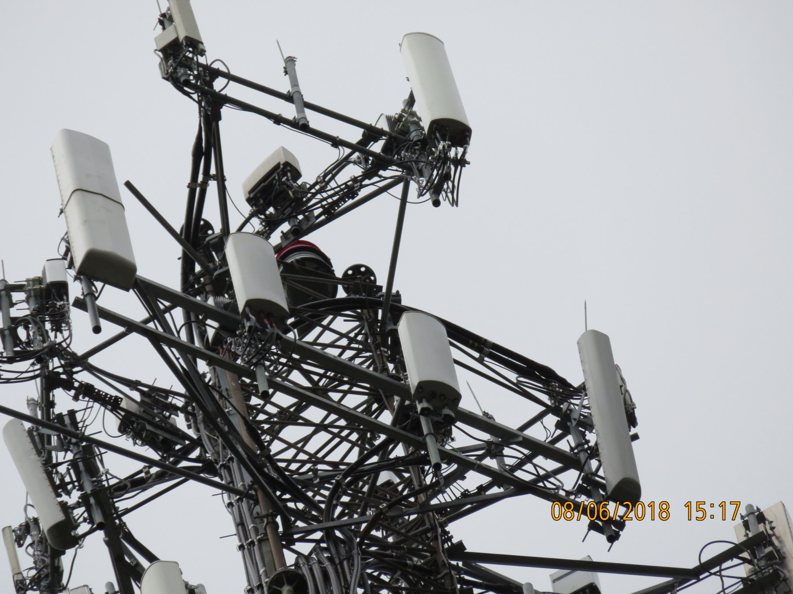
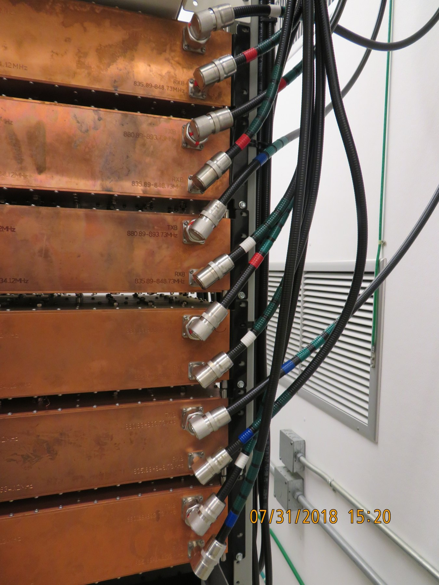
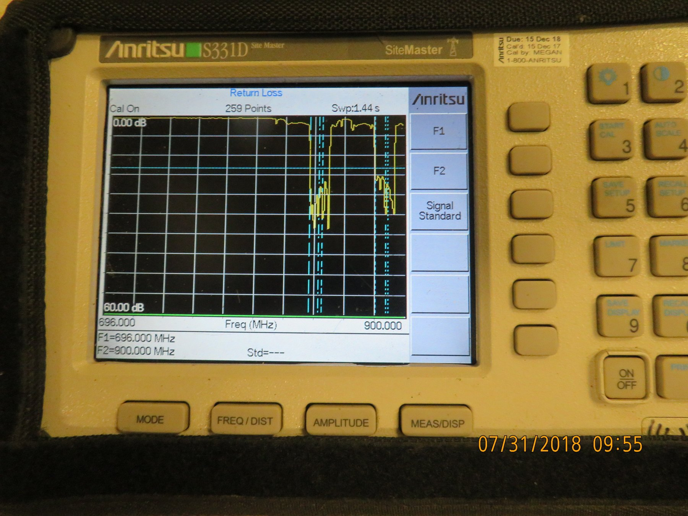
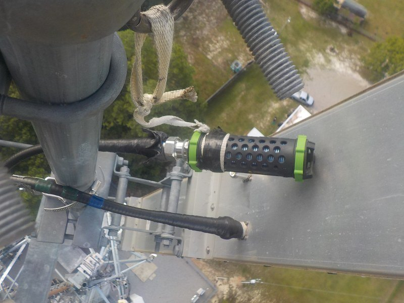
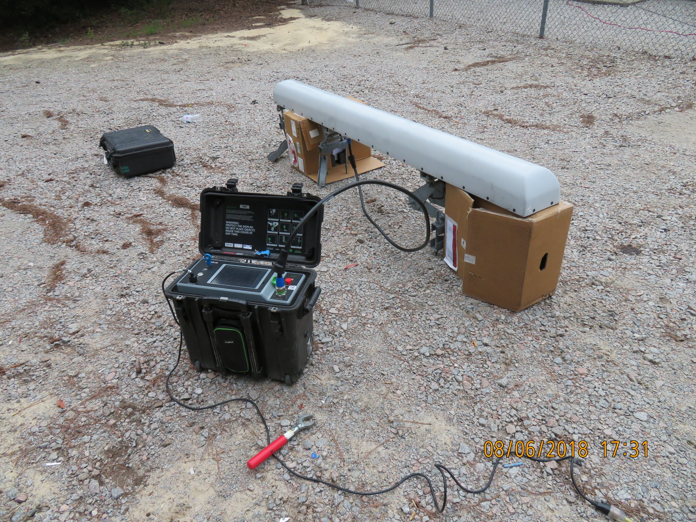
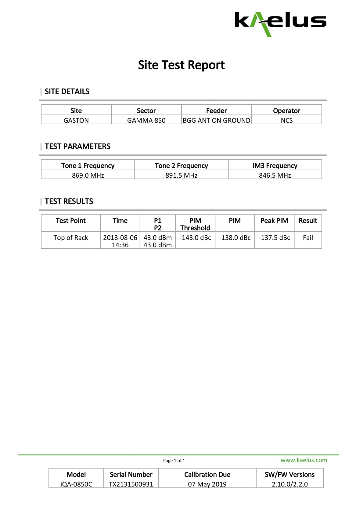
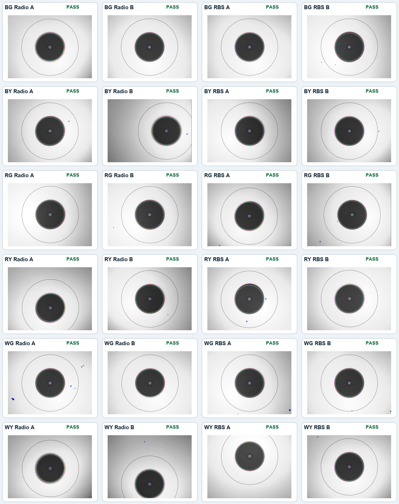
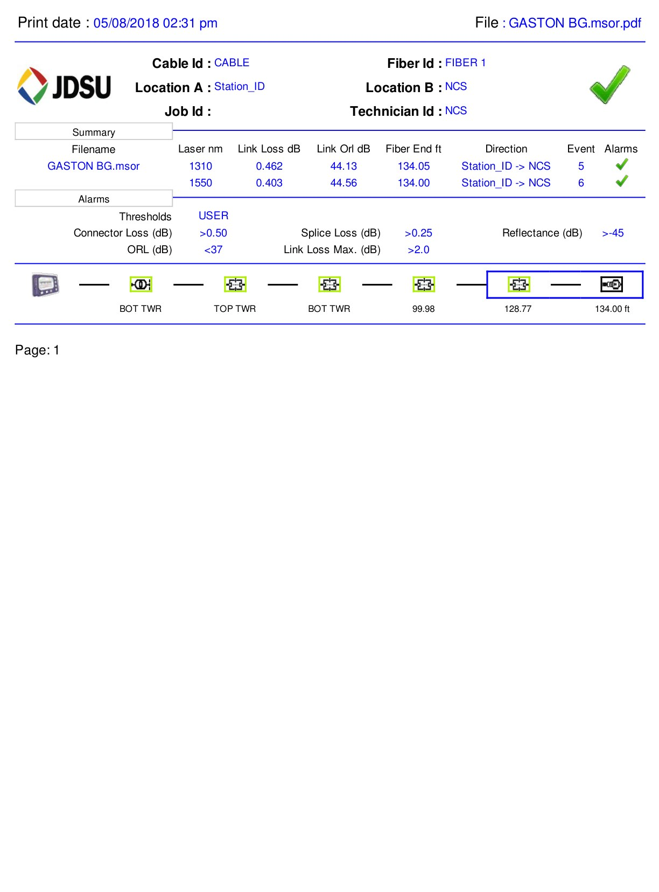
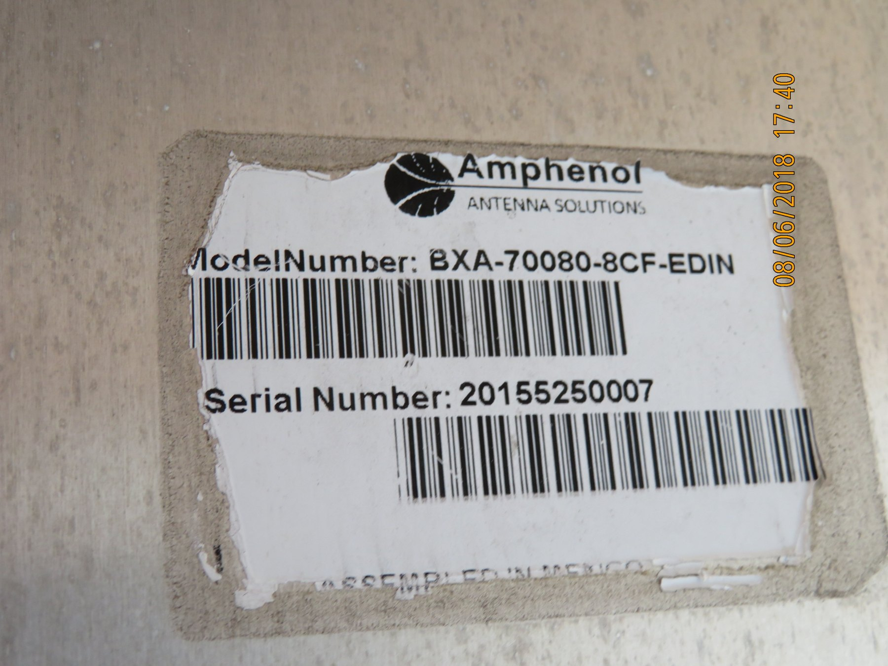

Start by correcting the signal path
The July 31 quality ticket revealed crossed B-band transmit lines. I traced and verified the 850 LTE RF paths through the site equipment and hardlines, disconnecting and checking branches as needed and using the Anritsu during line identification. I then corrected the crossed connections and color coding.


The isolation sequence
- The ground hardline load ruled out the ground equipment. Loading the Gamma 850 branch at the ground hardline showed that the PIM source remained above the ground equipment.
- The antenna jumper swap moved the problem. I had the climbing crew swap the BG and BGG coax jumpers at the antenna while I compared the PIM behavior from the ground. The problem moved from branch 3 to branch 4, pointing to the G1 antenna rather than the feeder path.
- A known-good PIM load passed when connected in place of the antenna. With the known-good load substituted for the antenna on the BG test path, the control measured -159.8 dBc against a -143.0 dBc threshold.
- The removed G1 antenna failed on both tested ports. After the antenna was brought down, I tested it on the ground. The two tested antenna ports, identified in the test records as BG and BGG, measured -119.8 dBc and -138.0 dBc respectively, so both failed the -143.0 dBc threshold.


Compare the load and antenna results
| Test point | PIM | Peak PIM | Result |
|---|---|---|---|
| BG known-good load replacing antenna | -159.8 dBc | -159.7 dBc | PASS |
| BG antenna on ground | -119.8 dBc | -119.8 dBc | FAIL |
| BGG antenna on ground | -138.0 dBc | -137.5 dBc | FAIL |

Supporting fiber baseline
Earlier site records provided a clean fiber baseline: all 24 FiberChek inspections passed across six color pairs and their radio and RBS endpoints, and all six OTDR paths passed at both 1310 nm and 1550 nm. A teammate completed these tests, so they are included only as supporting site information and are not presented as my work.
| Path | 1310 nm loss | 1550 nm loss | Result |
|---|---|---|---|
| BG | 0.462 dB | 0.403 dB | PASS |
| BY | 0.398 dB | 0.376 dB | PASS |
| RG | 0.431 dB | 0.323 dB | PASS |
| RY | 0.412 dB | 0.273 dB | PASS |
| WG | 0.359 dB | 0.247 dB | PASS |
| WY | 0.464 dB | 0.342 dB | PASS |


Prepare the antenna RMA
I documented the antenna model and serial alongside the PIM reports, crossed-line photos, and isolation sequence. That package supported the request for a replacement antenna from Amphenol.
